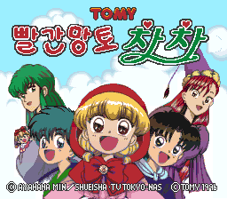

공략 · 팁
한국어 공략
화별 진행, 막히기 쉬운 대화와 퍼즐, 저장 방법과 보스전 팁을 찾아보세요. 다음 이야기와 결말은 접어 두었습니다.
길이 막힐 때, 다음 대화가 궁금할 때.
친구들과 함께 한 화씩 모험을 이어 가세요.

화별 진행, 막히기 쉬운 대화와 퍼즐, 저장 방법과 보스전 팁을 찾아보세요. 다음 이야기와 결말은 접어 두었습니다.
이야기 대사와 메뉴를 한국어로 바꾼 패치입니다. 다운로드, 적용법과 지원 원본을 확인하세요.
게임의 화 제목을 따라 필요한 공략을 찾아보세요.
이 코너의 폴더를 내려받았다면 index.html을 브라우저로 여세요. 공략·검색은 외부 라이브러리나 서버 없이 동작합니다. 외부 출처와 전체 홈을 열 때만 인터넷이 필요합니다.